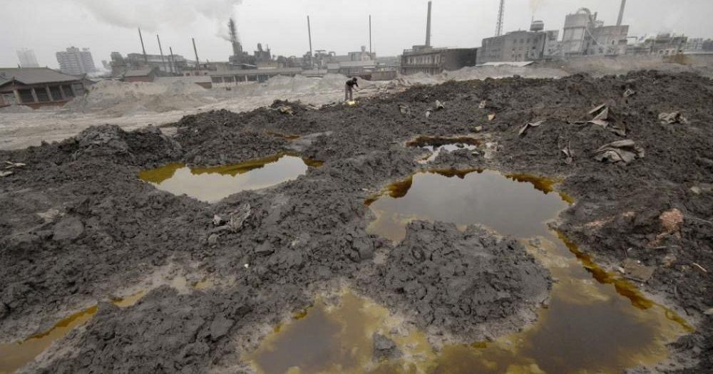
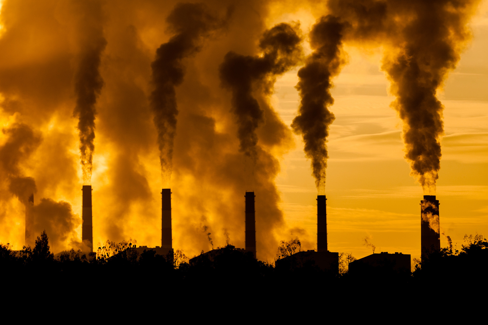
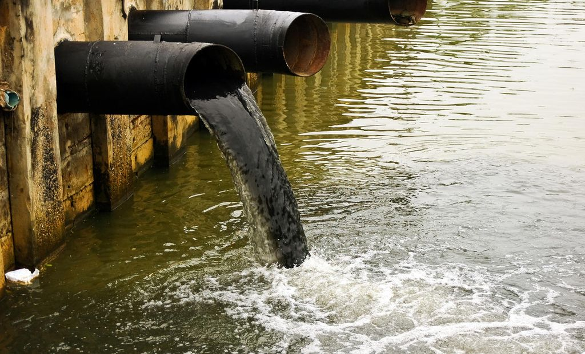
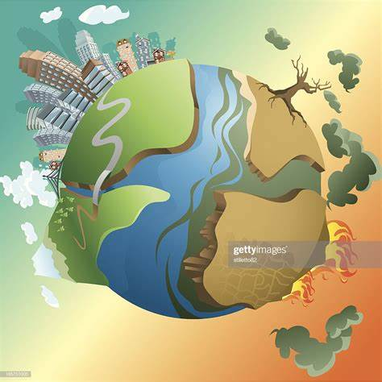

- According to Strat Matters, Waste disposal can be defined as any method used to discard unwanted substances or materials. However, Improper Waste Disposal is the disposal of waste in a way that has negative impact on the environment. Examples may include littering, hazardous waste that is dumped indiscriminately, and not recycling items that should be recycled.
The improper management of solid waste in Trinidad and Tobago has been an area of growing concern in recent years due to the rapid growth in the overall volume of waste being generated, and the increase in the proportion of non-biodegradable and hazardous waste . Rapid industrialization, commercialization and residential development have contributed to increased volumes and types of wastes that have demanded new approaches to waste management in our society.
The solid waste generated is usually disposed of by landfilling. There has been a significant and rapid reduction in landfill capacity at the 4 official landfills (Beetham, Forres Park, Guanapo and Studley Park) because of the rapid growth in the volume of solid waste being generated. Apart from the reduction in landfill capacity, the collection system for waste is also constrained by the increased volume. One of the most notable problems with the inadequacy of the collection system is the untimely collection of garbage, especially in urban areas on weekends, which has resulted in the pile-up of garbage and the associated unsanitary conditions in the country’s major city centers and also our natural environments (Parks,reserves,beaches, forests).
These inefficiencies in the collection services exacerbated by the poor levels of environmental literacy among the citizenry have also led to increasing incidence of illegal dumping of waste along the verges of roadways, vacant lots and watercourses (Improper Waste Disposal). Apart from the impacts on the aesthetics of the natural environment, illegal dumping is a major contributor to the annual problem of flooding and poses a serious public health concern.
Effects of Improper Waste Disposal
Soil contamination

Soil contamination is the No. 1 problem caused by improper waste removal and disposal. Some wastes that end up in landfills excrete hazardous chemicals that leach into the soil. Take the case of plastic bottles. When they eventually break down, they release DEHA, a carcinogen that affects our reproduction systems, causes liver dysfunction, and weight loss. Soil contamination does not only affect plant growth, it is also unhealthy to humans and animals feeding on those plants.
It is therefore important that every household takes recycling to heart. Plastics, aluminum, cardboard boxes, and electronic wastes can be recycled at via SWMCOL(Solid Waste Management Company Limited). If everyone takes time to isolate and sort their recyclable wastes and bring them to the closest iCare recyclable bin in your area, the bulk of waste that reaches the landfills will be removed.
Air contamination

Waste that contains hazardous chemicals, such as bleach and acids, needs to be disposed of properly, and only in approved containers with correct labels.Landfills have as a natural by product, methane gas, which is classified as a greenhouse gas – if there are improper capture systems for the methane produced, it escapes easily into the air, thus adding to the further deterioration of the Ozone layer. Additionally, fires which are set (intentionally or unintentionally) result in the combustion of a toxic mix of materials, which releases many dioxins into the air.
Water contamination

Hazardous wastes in the environment leach into the ground, and ultimately, into ground water. This water is used for many things, from watering the local fields to drinking. Toxic liquid chemicals from waste can also seep into water streams and bodies of water.
Bad impact on human health
Improper disposal of waste can greatly affect the health of the population living nearby the polluted area or landfills. Waste disposal workers and other employees in these landfill facilities are at a greater risk. Exposure to improperly handled wastes can cause skin irritations, blood infections, respiratory problems, growth problems, and even reproductive issues.
Impact on animals and marine life
It cannot be stressed enough: our carelessness with our waste and garbage does not just affect us. Animals likewise suffer the effects of pollution caused by improperly disposed wastes and rubbish. Styrofoam and cigarette butts have been known to cause deaths in marine animals who consume them. Animals who consume grasses near contaminated areas or landfills are also at risk of poisoning due to the toxins that seep into the soil.
Disease-carrying pests
Mosquitoes and rats are known to live and breed in sewage areas, and both are known to carry life-threatening diseases. Mosquitoes breed in cans and tires that collect water and can carry diseases such as malaria and dengue. Rats find food and shelter in landfills and sewage, and they can carry diseases such as leptospirosis and salmonellosis. Moreover, moisture production from waste is a breeding ground for mold. It’s bacteria that has the ability to spread and grow given the appropriate conditions, such as moisture production from appliances and food scraps.
Adversely affect the local economy
Everyone wants to stay and live in a healthy, clean, fresh, and sanitary place. A city with poor waste management will certainly not attract tourists or investors. Landfill facilities that are mismanaged can cause the local economy to sink, which can then affect the livelihood of the locals.
Causes extreme climate changes
Decomposing waste emits gases that rise to the atmosphere and trap heat. Greenhouse gases are one of the major culprits behind the extreme weather changes that the world is experiencing. From extremely strong storms and typhoons to smouldering heat, people are experiencing and suffering the negative effects of greenhouse gases.
It is slowly killing the planet

We only have one planet, and our careless handling of waste is harming it. Taking care of the environment is everyone’s responsibility, for ourselves, for our planet, and for our children.